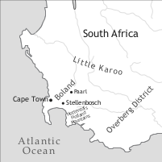

by Robbert van Sluijs

Afrikaans, one of eleven official languages of South Africa, is by many considered a semi-creole language, which is in many respects remarkably close to its parent, Dutch. In South Africa, it has almost six million speakers, and is the third largest language in terms of number of mother tongue speakers (Census 2001). It is spoken by both whites of European descent and coloured people of mixed European, Khoekhoe and slave descent. The great majority of the Afrikaans speakers have a very good command of English and are often practically bilingual in Afrikaans and English. The idea prevalent in older days that most Dutch grammatical norms are valid for Afrikaans as well has rapidly been fading and the huge influence of English is now recognized (Donaldson 1993: xv). In many rural areas, Afrikaans is used as a lingua franca between whites and blacks (Donaldson 1993: xiii). In Namibia most of the white inhabitants have Afrikaans as their mother tongue, which is a few tens of thousands, as well as “various groups of mixed race”, and Afrikaans is the most widely used lingua franca in Namibia (Donaldson 1993: xiii). There is also a small population of white Afrikaans speakers in Botswana.
Afrikaans arose from the colloquial Cape Dutch of the Dutch settlers, which diverged from the Dutch of the Netherlands, also under the influence from other languages, especially the indigenous language Khoekhoe and the imported languages South African Portuguese Creole and South African Malay.
The most original indigenous people of South Africa are those referred to as “Khoesan”, who lived as hunter-gatherers or livestock herders (Mesthrie 2002: 13). Their languages belong to the putative phylum of Khoesan languages. Later, Bantu-speaking peoples settled in the south of Africa. With the Bantu-speaking peoples dominant over the Khoesan, Mesthrie (2002: 14) assumes mainly peaceful relations between them, contrary to the relations with the European settlers. There were approximately fifty thousand Khoekhoe before the Dutch installed a trading station at the Cape, which would eventually grow into Cape Town (Elphick & Malherbe 1989, Roberge 2002: 80). Since before that, Portuguese and English sailors had been stopping at this point as well, the indigenous people were familiar with a jargon form of English with Portuguese and Dutch lexical influences even before 1652 (den Besten 1989). The trading station soon became a colony, containing substantial numbers of Germans and Huguenot French refugees, as well as other Europeans in smaller numbers, together forming a new community that would end up contending with the Khoesan over cattle and land (Mesthrie 2002: 14). The Dutch occupation needed only sixty years to completely destroy “the traditional Khoekhoe economy, social structure and political order” (Roberge 2002: 80), in addition to which two outbursts of a smallpox epidemics in 1713 and 1755 killed most of the Khoekhoe (Roberge 2002: 80). They retained their own language until halfway in the eighteenth century, when it started to disappear from the western Cape (Roberge 2002: 80). By 1800 most of the remaining Khoekhoe in the colony worked for the Europeans on the farm and in the house (Roberge 2002: 81).
Between 1652 and 1808 the Dutch imported about 63,000 slaves to the colony: Initially only a few, in 1658 in larger numbers from Angola and Dahomey, and after that they came predominantly from Madagascar, Mozambique, Indonesia, India and Sri Lanka, and the Mascarenes (Shell 1994: 12–13). The great majority of the slaves were taken from the Eastern possessions of the VOC (Vereenigde Oost-Indische Compagnie) until the middle of the 1780s. Between 1784 and 1808 the import of slaves was the biggest, by then mainly taken from the east of Africa and Madagascar (Roberge 2002: 81), resulting in the most diverse slave population known (Shell 1994: 11). The slaves were separated from other slaves with the same linguistic and cultural background after their arrival, which prevented the formation of a slave community, with the exception of Cape Town (Roberge 2002: 81–82). Roberge mentions that “some slaves were proficient at several European and/or Asian languages”, while others only spoke their own languages with which they could not communicate with other slaves, the Europeans, nor the indigenous South Africans (2002: 82). To resolve this, some slaves used a form of Portuguese Creole, which was in use until the end of the VOC era (Valkhoff 1966: 146–91; den Besten 1997), a “more-or-less koineized South African variety of Malay” (Roberge 2002: 82; see den Besten 2000), though most newly arrived slaves used “jargonized forms of Dutch” (Roberge 2002: 82). About fifty per cent of the slave population was born in the Cape by the 1760s (Shell 1994: 16–17). At the moment of abolition of slavery in the Cape, in 1834, the slave population amounted to 36,169 (Roberge 2002: 89).
Late in the eighteenth century, Dutch farmers trekked east, which led them into conflicts with the Xhosa (Mesthrie 2002: 15). In 1795, the British captured Cape Town, though they returned it to Dutch hands in 1803, only to recapture it in 1806, which was also the moment when European missionaries began the first schools for blacks and coloured people – descendants of the slaves, Khoesan, and people of mixed origin (Mesthrie 2002: 15). In the course of the nineteenth century, Afrikaans had already developed as a “colloquial variety of Dutch, with admixture from other languages” (Mesthrie 2002: 15). The British installed English as the language of government, education, and law, in replacement of Dutch, which was one of the reasons that eventually made the Dutch draw further into the inner land in the course of the nineteenth century. At this time, Afrikaans culture started to form out of “the Dutch and slave experience in Africa” (Mesthrie 2002: 15). The Afrikaners, the people of Dutch descent in South Africa, founded two republics in the 1850s: the Transvaal and the Orange Free State, with Dutch as the official language, though a strong influence of English was present also here (Mesthrie 2002: 17). In the 1870s the “Fellowship of True Afrikaners” (Genootskap van regte Afrikaners) was formed. They made a case for Afrikaans as a separate language equal in value to a language such as Dutch, as a result of which Afrikaans started to be used more and more as a written language instead of Dutch, though before that Afrikaans had been written by Muslims in Arabic orthography (Mesthrie 2002: 17; Roberge 2002: 83). After precious metals had been found in the 1860s, the British took over the Transvaal in 1877, which reinforced Afrikaner nationalism, and this was followed by two wars between Afrikaners and British, of which the latter was won by the British (Mesthrie 2002: 17). In 1910 the Union of South Africa was founded, with English and Dutch as the official languages (the latter being replaced in 1925 by Afrikaans), as the Afrikaners strongly rejected the Anglicization attempts of the British (Mesthrie 2002: 18). In 1913 a Land Act came into force, dictating that most of the land would fall under control of the white people, and in the second part of the twentieth century the apartheid governments “[used] the education system to play out the rivalry between Afrikaans and English”, resulting in the situation that both were used as a medium of instruction in both primary and secondary education, also to “children who were acquainted with neither language” (Mesthrie 2002: 19). After heavy protests against white domination in the 1970s and 1980s, in which many lives were lost, South Africa became a democracy in 1994.
Exactly how Cape Dutch evolved into Afrikaans is a question which has not yet been uncontroversially answered. Readers should consult Roberge (2002) for further discussion of the different hypotheses about the formation of Afrikaans, and den Besten (1989) for the hypothesized role of the Khoekhoe in the formation process.
Roberge notes that three basic varieties of Afrikaans have been recognized since van Rensburg (1983): First, Cape Afrikaans, which “extends from Cape Town and the Boland (Stellenbosch, Paarl) along the Atlantic coast to approximately the Olifants River in the north and eastward along the south coast to the Overberg district (east of the Hottentots Holland mountains) and the Little Karoo. Second, Orange River Afrikaans (Oranjerivier-Afrikaans) is spoken by people of colour in the north-western Cape (Namaqualand), in Namibia up to Etosha Pan, and in the southern Free State (with an offshoot near Kokstad in south-eastern KwaZulu-Natal)” (Roberge 2002: 83). The differences between Cape and Orange River Afrikaans can be explained by the fact that the latter has been much more influenced by Khoekhoe speakers (Roberge 2002: 83). Third, Eastern Cape Afrikaans (Oosgrens-Afrikaans) evolved out of the vernacular of the settlers from along the eastern frontier at the end of the eighteenth century, who then moved into the former Orange Free State and Transvaal. Standard Afrikaans is primarily based on Eastern Cape Afrikaans, “with adlexification from Dutch in learned vocabulary”, and has developed between 1900 and 1930 (Roberge 2002: 84). Donaldson (1993: xvi) remarks that “in the higher registers in particular, it is difficult to draw a line between the lexicon” of Dutch and Afrikaans and that regional variations in pronunciation are common, and that “there is no strong social stigma associated with the pronunciation of other regions” (Donaldson 1993: 3).
The languages of South Africa display a fairly clear functional distribution, in which English is dominantly used in commerce, higher education and industry, and Afrikaans in the civil service, army, and navy (Mesthrie 2002: 23). African languages have been used in primary schools for African pupils, though sometimes unofficially so (as in the fifth year of primary school English was to be used) (Mesthrie 2002: 23).
Afrikaans has a fairly complex vowel system, reminiscent of the Dutch system, containing both long and short vowels, front and central rounded vowels, and diphthongs (see Table 1).
|
Table 1. Vowels |
|||
|
front |
central |
back |
|
|
close |
i <ie>, y <uu>, ǝi <ei, y>, œi (œy) <ui>, |
ɨ <i> |
u <oe>, ɔu (œu) <ou> |
|
close-mid |
eǝ <ee>, øǝ <eu> |
ǝ <e> |
oǝ <oo> |
|
open-mid |
ɛ <e>, œ <u> |
ɔ <o> |
|
|
open |
a <a>, ɑ: <aa, ae> |
||
Afrikaans has eight monophthongal oral vowels, plus /ǝ/, which cannot occur in stressed syllables. Donaldson states that the short vowel written as <i>, traditionally transcribed as /ǝ/, does in fact differ from schwa: <i> is realized as a higher central vowel than [ǝ], which makes [ɨ] a more accurate transcription (1993: 4).
/a/, /ɛ/, and /ɔ/ are lengthened and nasalized before <-ns>, and the nasal vowel is not retained, e.g. kans [kã:s] ‘chance’. /i/, /y/, and /u/ are lengthened when followed by an /r/, e.g. boer [bu:r] ‘farmer’, mier [mi:r] ‘ant’. The short vowel /ɛ/ is lengthened before an /r/, e.g. ver [fɛ:r] ‘far’, but in non-standard varieties it is also lowered: ver [fæ:r] ‘far’. In just a few words, /ɛ/ is inherently lengthened, e.g. sê [sɛ:] ‘say’. <o> is lengthened to [ɔ:] when followed by /r/ plus <s>, <t>, or <d>, and in a few other words where it is written <ô>, e.g. môre [mɔ:rǝ]. Some words ending in <-ug> drop the <g> in the plural resulting into a lengthened <u>, e.g. rug [rœx] ‘back’, rûe [rœ:(h)ǝ] ‘backs’. Before [l], [k], and [x] <e> is realized as [æ] in some non-standard varieties.
The sound represented by <oe> is slightly unrounded, therefore sometimes /ɯ/ is used instead of /u/. Some people tend to unround /y/ and /œ/ to /i/ and /ɨ/ respectively. The unrounding of /œ/ to /ɨ/ is “the most wide-spread and the […] least likely to strike people as non-standard”, compared to unrounding of [u] and [y], which suggests that the sound written <u> is more adequately transcribed by /ʉ/ than by /œ/.
Afrikaans has six real diphthongs (included in Table 1). It has been usual in Afrikaans literature to transcribe <ee>, <oo>, and <eu> as long vowels ([e:], [o:], and [ø:] respectively), though in reality they are pronounced as diphthongs: [eǝ], [oǝ], and [øǝ]. Very frequent and equally regarded as standard Afrikaans are the pronunciations [iǝ] and [uǝ] for <ee> and <oo>, while in the Boland region they are pronounced [i:] and [u:], a pronunciation which has become stigmatized. The second part of the diphthong <ui> [œy] is very commonly unrounded, resulting in the pronunciation [œi]. The diphthongs /ai/ and /ɔi/ are rare and occur primarily (but not exclusively) in loanwords.
In addition to the diphthongs, Afrikaans also has combinations of two vowels (Donaldson 1993: 10). To these belong /iu/ <eeu>, /ui/ <oei>, /ɑ:i/ <aai>, and /o:i/ <ooi> (1993: 2). When monosyllabic diminutives ending in <-djie> or <-tjie> contain <a>, <aa>, <an>, <e>, <en>, <i>, <in>, <o>, <oo>, <on>, <oe>, <u>, or <un>, this vowel is diphthongized, e.g. bed [bɛt] - bedjie [bɛici], unless it is followed by <l> or <r>.
When unstressed, <i> and <e> are pronounced as schwa, e.g. gelukkig [xǝ’lœkǝx], while in words with foreign roots schwa may be represented by other vowels too.
Table 2 shows the consonants.
|
Table 2. Consonants |
|||||||||
|
bilabial |
labio-dental |
labio-velar |
alveolar |
post-alveolar |
palatal |
velar |
glottal |
||
|
plosive |
voiceless |
p |
t |
k |
|||||
|
voiced |
b |
d |
|||||||
|
nasal |
m |
n |
ŋ <ng> |
||||||
|
trill |
r |
||||||||
|
fricative |
voiceless |
f <f,v> |
s |
(ʃ <sj>) |
x <g> |
||||
|
voiced |
v <w> |
(z) |
(ʒ <g>) |
ɦ <h> |
|||||
|
affricate |
voiceless |
(ts) |
tʃ <tj> |
||||||
|
voiced |
(dʒ <j, dj>) |
||||||||
|
lateral/approx. |
l |
j <j> |
|||||||
Consonants in brackets occur in loanwords only. When word and syllable final, <b> and <d> are devoiced (Donaldson 1993: 13). When the preceding syllable or word ends in a consonant, <h> is dropped. When followed by <e>, <ee> or <eu>, <h> is often pronounced [j]. When preceding <ee> and <ie>, <g> may be realized as a palatal fricative [ç], but in the combination short vowel plus [r] plus <g> plus [ǝ], <g> is most commonly realized as a voiced velar plosive [g], e.g. berge [bærgǝ] ‘mountains’. This is also the case in the following word: gevolge [xǝ’fɔlgǝ] ‘consequences’. When following a consonant, <w> is realized as a labio-velar approximant [w], with the exception of speakers from the Boland who always pronounce <w> as [v]. Speakers from the rural areas of the Western Cape use a uvular r, [r], instead of an alveolar trill. Before the high vowels /i/ and /y/, <k> is pronounced [c], and the diminutive endings <tjie> or <djie> are also pronounced [ci], though in the Cape dialect the affricate pronunciation of the diminutive ending [tʃ] is still used. The affricate /tʃ/ is sometimes realized as [tj], though [tʃ] is more usual, especially in loanwords. Often English loans retain their English phonemes, or in some cases the English origin is in some way noticeable in the pronunciation, such as the occurrence of a voiced plosive in final position, which does not follow Afrikaans’ phonological rules. Worth mentioning is also the pronunciation of <u> as [ju] in words often of French origin via Dutch, which have cognates in English and are by many wrongly regarded as English loans to be avoided, e.g. situasie [sitju’ɑ:si] ‘situation’. Schwa insertion occurs before <l> or <r> plus <m> or <n>, e.g. arm [arǝm] ‘arm, poor’.
Generally speaking, the plural can be formed by the addition of -s: man - mans (‘man’), or -e: boek - boeke (‘book(s)’) (den Besten and Biberauer, 2013). Some nouns can take either plural form (with or without a preference). Most nouns take the plural marker -e, and this may cause a number of additional changes: If a noun ends in <-f>, it is voiced and written as <-w->; if a noun contains a long vowel or diphthong followed by a <-g> or <-d>, the latter is mostly dropped, the former always: e.g. vraag – vrae ‘question(s)’; six nouns with a short vowel plus <–g> drop this consonant and lengthen their vowel when pluralized, e.g. brug – brûe ‘bridge(s)’; other nouns with short vowels in the singular either lengthen their vowel or have a different long vowel in the plural, e.g. glas – glase ‘glass(es)’, stad – stede ‘city(ies)’. Quite a number of nouns are pluralized by the addition of -de/-te, which contains a historically present final -d or -t that survived only in inflected forms or derivations in which it was not in final position, e.g. gas – gaste ‘guest(s)’. There are also nouns which have a plural ending in -ens, e.g. bad – baddens ‘bath(s)’, -ers e.g. kind – kinders ‘child(ren)’, or -ere e.g. gemoed – gemoedere ‘mind’, though the last three are increasingly limited in occurrence and rare, plurals in -ere, with the exception of gemoedere, are all formal forms which have other plural endings in normal language use. Finally, there are words of Greek or Latin origin with a Latin plural, e.g. katalogus – katalogi ‘catalogue(s)’, or with both an Afrikaans and a Latin plural form, e.g. museum – musea/museums ‘museum(s)’. Words for people that end in -kus have both an Afrikaans plural and a plural in -ci, of which the latter is more common, e.g. tegnikus – tegnici/tegnikusse ‘technician(s)’. Diminutives are very common in Afrikaans, and some words only occur as diminutives or have even become separate lexical items, e.g. drank ‘drink (collective)’ versus drankie ‘drink, beverage (individual)’. The diminutive is formed by the suffix -tjie (-djie) (see §4 for the pronunciation of the diminutive) when following historically long vowels plus alveolar sonorants (<r>, <l>, <n>), vowels, and <d> or <t> (in the latter case the addition of -jie in the spelling is sufficient), and a schwa is inserted before the suffix when it follows monosyllabic nouns with a short vowel ending in a consonantal sonorant (<r>, <l>, <m>, <n>, <ng>) or a <b>, e.g. ster – sterretjie ‘star’. The diminutive suffix is assimilated to -kie in nouns ending in -k or -ing, and to -pie in nouns ending in -m. All other nouns take the form -ie (Donaldson 1993).
Afrikaans has no grammatical gender, but natural gender in animals can be expressed by adding mannetjie(s) ‘male’ or wyfie ‘female’ respectively either before or after the noun (Donaldson 1993: 91/97):
For a few animals the female form can be derived from the male (neutral) form through the suffix -in, e.g. leeu ‘lion’, leeuin ‘lioness’. For humans, there are a number of suffixes that can be used to refer to women: the lexicalized -in, e.g. vriendin ‘(female) friend’; -ster, e.g. huishoudster ‘house-keeper’; -esse, e.g. sekretaresse ‘secretary’; -es, e.g. sangeres ‘singer’; -trise, which is the feminine form of -teur, e.g. aktrise ‘actor’; -e may be added to words ending in -ent, e.g. assistente ‘assistent’.
The indefinite article is ‘n [ǝ]. The definite article is die. Generic noun phrases are mostly expressed by bare plurals or by an indefinite singular noun phrase, though a singular NP with a definite article, and in a specific construction a bare singular NP is also possible (den Besten and Biberauer, 2013). When the definite article is stressed (written as dié) it functions as an adnominal demonstrative, which can have either proximal or distal reference. Other demonstrative forms are daardie (in spoken language also daai) with distal reference and hierdie with proximal reference (den Besten, APiCS Online).
Adnominal possessives precede the noun: my huis ‘my house’ (see Table 3). Afrikaans has distinct pronominal possessives: Dié huis is myne ‘This house is mine’. Possessor noun phrases can be formed by the use of the particle se, regardless of number: Karel se motor ‘Charles’s car’ (den Besten and Biberauer, 2013). Multiple possessors can be embedded this way: ons bure se vriende se seun ‘our neighbours’ friends’ son’ (Donaldson 1993: 98). A postpositional construction with van ‘of’ exists too, but is less common. When the possessor is used independently, the particle s’n(e) is used: Dis Amanda se ma s’n ‘It’s Amanda’s mother’s’.
Predicative adjectives are never inflected (Donaldson 1993: 163). When used attributively, adjectives precede the noun and many have an inflectional -e, which if an adjective inflects, is present in all cases, that is for both singular and plural nouns, whether indefinite or definite. Typically, all adjectives of two or more syllables and many of those ending in -d, -f, -g or -s inflect, in which case the same rules may apply as for the plural in -e, e.g. droog ‘dry’, ‘n droë wyn ‘a dry wine’, juis ‘correct’, die juiste antwoorde ‘the right answers’. Many adjectives however do not inflect, e.g. mooi huise ‘beautiful houses’. Normally uninflected adjectives may still be inflected when used figuratively or affectively, e.g. jou arme ding ‘you poor thing’. Adjectives take an (in speech often omitted) -s after indefinite pronouns and in particular after iets ‘something’ and niks ‘nothing’: iets interessants ‘something interesting’. The comparison of equality is done as in the following examples:
Adjectives take -er to form the comparative of inequality, where the same rules apply as for the plural and the adjectival inflection, but comparatives are not inflected (1993: 175):
To form the superlative, -ste is added (1993: 177):
For especially the longer adjectives a periphrastic construction with meer ‘more’ for the comparative and for the superlative meest ‘most’ is used (1993: 178).
Table 3 lists personal pronouns and adnominal possessive pronouns.
|
Table 3. Personal pronouns and adnominal possessives |
||||
|
subject |
object |
adnominal possessive |
pronominal possessive |
|
|
1sg |
ek |
my |
my |
myne |
|
2sg 2rev |
jy u |
jou u |
jou u |
joune u s’n |
|
3sg masc fem neut |
hy sy dit |
hom haar dit |
sy haar sy |
syne hare syne |
|
1pl |
ons |
ons |
ons |
ons s’n |
|
2pl |
julle |
julle |
julle/jul |
julle s’n |
|
3pl |
hulle |
hulle |
hulle/hul |
hulle s’n |
There are no special dependent pronoun forms. The pronominal demonstrative dié can replace all third person pronouns for special emphasis (Donaldson 1993: 144). Afrikaans makes a politeness distinction in the second person. Jy and julle are the familiar forms, but the polite form u is largely restricted to the language of the media and educated urban speakers of Afrikaans (1993: 124). Rather than u, Afrikaans uses nouns of kinship and polite address as pronouns, such as Pa ‘Dad’, Ma ‘Mum’, Oupa ‘Granddad’, Ouma ‘Grandma’, Oom ‘Uncle’, Tannie ‘Auntie’, Meneer ‘Mister/Sir’, Mevrou ‘Mrs./Madam’, Dokter ‘Doctor’. They are used as second person forms and behave like pronouns in that they can be used in reflexive situations, e.g. in (6) Oom is used as a subject and where one expects a reflexive pronoun:
An associative plural is formed by suffixing the pronoun hulle to a noun: e.g. Pa-hulle ‘Dad and one or more others’. If hulle is suffixed to a noun or NP already in plural, then the associative plural may refer to zero or more others. This construction is not found in formal written texts (den Besten and Biberauer, 2013).
When reference is made to inanimate nouns, mostly third person masculine pronouns are used (as is the case in Dutch for common gender nouns, which have die/de as determiner/article):
When third person pronouns and pronominal demonstratives combine with prepositions and refer to inanimates, they are usually replaced by the locative adverb daar (or hier for proximal dit/hierdie) which then precedes the preposition (1993: 128):
The indefinite pronouns iemand and niemand mean ‘some-/anybody’ and ‘nobody’ respectively.
The unmarked verb can have both present and future time reference (1993: 217/236). Past events are often unmarked, when the past time reference is clear from another element, e.g. an adverb, a conjunction, or a preceding clause with past tense marking (1993: 228–231). Tense and aspect markers are summarized in Table 4.
|
Table 4. Tense and aspect |
||||
|
tense |
aspect |
mood |
||
|
Ø het ge-V |
present, future, (past) past |
|||
|
sal gaan aan die V wees besig wees te sit/staan/lê/loop en |
future future |
progressive progressive progressive |
willingness |
|
The verb is marked for past tense by the auxiliary het ‘have’ plus the past participle, which is formed by prefixing ge- to the verb, but verbs with an unstressed prefix and some which end in -eer do not take ge-. Exceptions are: the modal verbs discussed below, dink ‘think’ with past tense forms dog/dag, het gedog/gedag/gedink, weet ‘know’ - wis, het geweet, hê (het) ‘have’ - had, het gehad; and wees (is) ‘be’ - was, was gewees. The past tense forms had and wis are rare, was gewees is more frequent than was. There are two verbs which have an infinitive deviant from the finite form: infinitive wees versus is and hê versus het (1993: 239). When het is used as the past tense auxiliary, it stays het even when it is not in the finite verb position (see §7), as evident in (10) and (14–15). In contexts demanding a past participle, the infinitive is used instead, when it is followed by another infinitive, which then is not introduced by infinitival complementizer (om) te (1993: 225–226):
Note that the double infinitive construction does not apply when the second verb is the auxiliary het following only one full verb, as the contrast between (10a) and (10b) shows:
The form sal can be seen as a tense auxiliary as well as a modal auxiliary, which is why it is also included in Table 5 on modal verbs. The future is usually unmarked (1993: 236), as it is the case in Dutch.
Progressive aspect can explicitly be marked through a number of constructions:
(i) aan die werk wees:
(ii) besig wees om te werk:
(iii) sit/staan/lê/loop en werk
sit/stand/lie/walk and work
Construction (ii) can also occur in a non-agentive context (den Besten, APiCS Online). The posture verbs of (iii) do not necessarily correspond to the exact posture of the action carried out, though the action needs to be executable that way (Donaldson 1993: 220).
The copula wees ‘be’ (in all its forms) cannot be omitted: Hy *(is) siek ‘He is ill.’
The modal verbs (summarized in Table 5) have a special past tense formation, e.g. by vowel change or some other stem changes, and in some cases multiple past tense forms with slightly or partly different meanings are available (see Table 5 in part adapted from Donaldson (1993: 240–248)). Note that the past tense is marked on the verb in the scope of the modal rather than on the modal itself in a sentence like (14):
Following this pattern with the verb forms sou, moes, wou, kon, a perfect irrealis can be constructed, e.g. Ek wou dit gedoen het ‘I would have liked/wanted to do it’ (1993: 243). Wou gedoen het, moes gedoen het and kon gedoen het (though in the case of the last one it is much less common) can be used as past tense forms and alternate with them without a difference in meaning:
The only difference between these two constructions is that the perfect (complex) constructions can refer to both realized and never realized events while the simple past tense construction can only refer to actual (realized) events (Donaldson 1993: 244–245):
|
Table 5. Modal verbs |
||||
|
past tense form |
modality |
|||
|
kan |
kon |
possibility, ability, epistemic possibility |
||
|
mag |
is/was toegelaat mag ge-V het |
permission permission, epistemic possibility |
||
|
moet |
moes |
necessity |
||
|
sal |
sou |
futurity, willingness conditional, past intention |
||
|
wil |
wou |
volition |
||
|
nie hoef behoort |
hoef nie ge-V het behoort ge-V het |
lack of necessity ‘should/ought to’ |
||
Hoef is a negative polar verb, i.e. it is only used in combination with a negation (Donaldson 1993: 247). Nie nodig hê (‘need not’) is also used instead of nie hoef.
Afrikaans has SOV word order with V2 word order in the main clause (den Besten, APiCS Online), so the finite verb is always in second position in simple sentences. Besides the subject, adverbials are common in first position, in which case the subject occurs post-verbally:
Non-finite verbs and the past participle follow the object, resulting in OV word order for infinitival clauses (see §6 about the verbs wees ‘be’ and hê ‘have’ as the only verbs with a special infinitive form) and constructions with the past participle:
The past tense auxiliary het occurs after the past participle if it is not finite:
Human indirect objects can be headed by the preposition vir ‘for’ (Donaldson 1993: 342). Vir can also be used with direct objects. This is more natural for animate ones, but especially in colloquial varieties can also be used with inanimate objects (den Besten, APiCS Online).
The reflexive pronouns are the same as the object pronouns for inherently reflexive and typically reflexive verbs, though the intensifier suffix -self can be added to avoid any ambiguity. For all other reflexive contexts the object pronoun + self is always used (den Besten, APiCS Online). Donaldson notes that due to English influence often reflexive pronouns are omitted (1993: 290).
The passive voice is expressed through a verb plus the past participle. For the present word ‘to become’ is used and for the past wees ‘to be’. The agent is headed by the preposition deur (den Besten and Biberauer, 2013):
As there is no semantic difference between was and was gewees (or even is gewees), the forms was and was gewees plus participle occur as well with past meaning (Donaldson 1993: 258):
Daar is used as an expletive subject in impersonal passives (den Besten and Biberauer, 2013):
Verbs are negated through nie ‘not’; other negators include nooit ‘never’, niemand ‘nobody’, nêrens ‘nowhere’, etc. If the negator is not clause final, a second negator nie is required, which in most cases comes at the end of the clause (Donaldson 1993: 402):
The first negator always follows a pronominal object, as in (25). The negator can either precede or follow nominal objects and pronominal objects preceded by a preposition (Donaldson 1993: 411–412; Biberauer 2008: 106):
If any word is emphasized (for contrast) and negated, the negator always directly precedes this word. See Biberauer (2008) for a syntactic analysis of the double negation construction. See §8 for negation in complex sentences.
The negated imperative has a special negator (moenie) preceding the verb plus the usual second negator: moenie praat nie! ‘don’t speak!’ (den Besten, APiCS Online).
The coordinating conjunctions are en ‘and’, maar ‘but’, of ‘or’, and want ‘for, because’ (Donaldson 1993: 300). En is also used for nominal conjunction.
Subordinate clauses have SOV word order. Object clauses are introduced by dat:
Dat is often omitted, in which case the subordinate clause takes on V2 word order, as in a main clause (Biberauer 2002: 31/36; den Besten and Biberauer, 2013).
Though it does not feature very often in written Afrikaans, Biberauer (2002: 39, 43) mentions that in spoken Afrikaans, object clauses with dat and V2 word order are quite common, especially after the verbs dink ‘think’, sien ‘see’, sê ‘say’, weet ‘know’, glo ‘believe’, and voel ‘feel’.
Adverbial clauses are introduced by omdat ‘because’, of ‘whether, if’, as ‘when, if’, terwyl ‘while’, and many others. Infinitival clauses are generally headed by om ... te ‘(in order) to’, where the complement of the infinitive is placed between om and te . Om ... te may function as the head of a purposive clause, but often it is semantically empty.
Relative clauses follow the head noun and are introduced by wat (den Besten, APiCS Online). When adpositions are involved, the following relative constructions are used:
- waar + adposition:
- waar + adposition before verb:
The construction in (36) is not as common as it is in Dutch. In spoken language the structure in (37) is often used instead (Donaldson 1993: 148):
- wat + adposition before verb:
- adposition + wie
The above construction is only used for human antecedents.
The possessive relative construction is wie se for animate antecedents, and waarvan for inanimate antecedents. In colloquial Afrikaans, the construction wat se can be heard for both animates and inanimates (Donaldson 1993: 149).
When subordinate clauses precede the main clause, they count as occupying the first position in this main clause. Due to V2 word order the main clause then continues with the verb first (Donaldson 1993: 368–369):
When a subordinate clause is negated, the negation works as in a simple sentence (see §7). When the main clause of a complex sentence is negated, the second negator normally comes at the end of the second clause, though it can also be placed at the end of the main clause (Donaldson 1993: 403–404). This second clause can also be a relative clause, though if the relative clause itself is negated and embedded, the second negator always comes at the end of the relative clause.
Some complementizers, such as (al)hoewel ‘although’ and omdat ‘because’ have second nie occur at the end of the main clause, which is also the case when the second clause is a co-ordinate clause or introduced by an adverbial complementizer, such as al ‘even if’ (Donaldson 1993: 406–408).
In polar questions the finite verb is clause-initial followed by the subject (Donaldson 1993: 370):
In content questions the interrogative has the first position in the clause, and the verb comes second as in any main clause (Donaldson 1993: 371):
Elements can be focused by placing them sentence-initially, though Biberauer mentions that in practice this is seldom done (Biberauer 2002: 29).
The APiCS questionnaire on Afrikaans was completed by Hans den Besten and Theresa Biberauer, and they were about to start on the survey chapter, when Hans sadly passed away in July 2010. The editors and Pieter Muysken then invited me to write the survey chapter instead of Hans. I have tried to embed as much information and examples of Hans from the APiCS database in this chapter to make it at least partly his too, although of course I could not possibly do justice to the immense work Hans has done on Afrikaans (of which a selection can be found in the references). I hereby gratefully acknowledge the editors, Pieter Muysken, Margot van den Berg, Ton van der Wouden, and Hein van der Voort for their valuable suggestions, comments, and support.